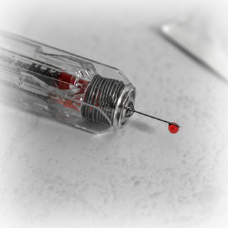

RIC MARTIN, THE "WALKING TALKING PLATELET FACTORY"
 I first began donating whole blood when I turned 21 in 1973 with the American Red Cross and I gave about two gallons of whole blood there before I started donating with the local agency, Inova, in '76. Back then Inova's operation was a tiny room in the basement of Fairfax Hospital. I remember that the room was rather small and anyone over 5'10" would have to crunch up a little to allow the phlebotomist to squeeze past the beds.It makes me very proud; we have been able to bond over the experience. I get to see her every time she donates and I can see her doing the math in her head of what/when she "thinks" she could over take my record.
TATHYA
 The average red blood cell transfusion is approximately 3 pints.
The average red blood cell transfusion is approximately 3 pints.
More than 1 million new people are diagnosed with cancer each year. Many of them will need blood, sometimes daily, during their chemotherapy treatment.
Healthy donor may donate red blood cells every 56 days, or double red cells every 112 days.
If you began donating blood at age 18 and donated every 90 days until you reached 60, you would have donated 30 gallons of blood, potentially helping save more than 500 lives!
MYTHOS
 Blood donation will take a lot of time.
Blood donation will take a lot of time.
People with infections, high cholesterol, diabetes or hypertension cannot donate blood.
I have already donated blood once this year, I can't donate again
If I donate blood I am susceptible to contract diseases like HIV
I suffer from diabetes, I cannot donate blood
SOCIAL AWARENESS
It is a good idea to check the safety and hygiene standards of the local camps before you sign up. "Make sure that the vials and syringes being used are new and they are not reusing their syringes" The attendants and doctors should be wearing gloves while handling the blood and should dispose of syringes and testing plates immediately after use.